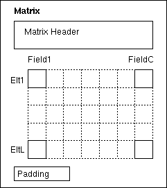
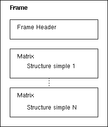
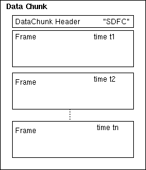

Avril 1997 Analyse/Synthèse
L'idée générale de Sdif est de stocker les informations liées au traitement du signal et plus particuliairement du son, dans des fichiers, suivant un format commun à tous les types de données. Ainsi, il est possible de stocker des résultats ou des paramètres d'analyses, de synthèses...
Le format a comme première spécification le stockage des données sous forme de matrices ou chaque colonne représente un champ de structure, et chaque ligne un élément de cette structure. Une structure que l'on peut représenter sous forme de matrice est dite dans ce document "simple".
Ainsi, pour une structure Filtre composée de trois champs "fréquence", "amplitude", et "largeur de bande", des éléments de Filtre sont stockés comme une matrice de trois colonnes et de autant de lignes qu'il y a d'éléments.
| Filtre | fréquence | amplitude | largeur de bande |
|---|---|---|---|
| Filtre1 | - | - | - |
| Filtre2 | - | - | - |
| FiltreN | - | - | - |
La seconde spécification de Sdif est que les matrices sont regroupées dans des frames. Il y a plusieurs types de frames : les bancs de filtres, les bancs de fofs... Un frame s'adresse à un objet contenant plusieurs sous-objets de structure(s) simple(s). Ainsi, un frame BancDeFiltre permet de représenter un ensemble de Filtres. Une structure associée à un frame est dite "composée".
A chaque modification dans le temps d'un paramètre d'un objet est associé un bloc frame Sdif pour le type de l'objet. Le fichier Sdif est globalement une succession de frames ordonnés dans le temps. Tous les frames sont regoupés dans un Chunk : le "Data Chunk".
Un fichier Sdif se compose de plusieurs chunks dans l'ordre :
Il devrait y avoir une Time Table mais son format et sa position n'ont pas encore été décidés.
Quelque soient les données d'un fichier Sdif ou le type de matériel informatique qui écrit ou lit des fichiers Sdif, toutes les données sont écrites en BigEndian IEEE et alignées sur 8 bytes.
L'entête d'un fichier Sdif se compose de trois champs :
| "FORM" | 4 bytes | Signature IFF |
| <File Size> | 8 bytes | Taille du fichier (entier) |
| "SDIF" | 4 bytes | Signature Sdif |
L'entête d'un chunk d'une table d'informations est codée sur 8 bytes :
| "SITC" | 4 bytes | Signature Informations Table |
| <Chunk Size> | 4 bytes | Taille du Chunk (entête et Padding inclus et par défault ffffffff hexa) |
La table d'informations permet d'avoir des informations générales comme l'auteur du fichier, la version de Sdif, le nombre de cannaux... Les données de ce chunk sont en ASCII.
Les données commencent par '{' et finissent par '}'. Chaque information est sous
la forme <Nom> <Valeur> ';' . Il est nécessaire d'avoir
au moins un caractère d'espacement entre le nom et la valeur (et non des caractères
nuls '\0' car c'est une partie ASCII).
Exemple de Informations Table Data:
{
numChannels 6 ;
SdifVersion 1.0.0.alpha;
MonProgrammeParametreSpecial integer4 ;
}
La grammaire associée est :
<Info Table Data> := '{' <Info declaration> | ... '}'
<Info declaration> := [<space chars>] <Name>
<space chars> <Value> [<space chars>]';'
<space chars> := <space> | ...
<space> := ' ' | '\t' | '\n' | '\f' | '\r' | '\v'
<Name> := ASCII string
<Value> := ASCII string
L'aspect ASCII de la table d'informations commence au '{' et fini au '}'. Mais après le '}', il y a un Padding qui peut varier de 0 à 7 bytes. Chaque bytes du Padding est mis à '\0'. Le Padding permet d'aligner le fichier sur 64 bits. Ainsi le chunk suivant débute aligné.
Il est possible dans Sdif de compléter les types de matrices ou de frames existant (cf : Predefined Types) ou d'en créer de nouveaux. Si un types existe déjà, on considère qu'une déclaration sur ce type est une complétion. S'il n'existe pas, alors c'est une création.
Cependant, pour un type donné, il ne peut y avoir qu'une seule déclaration dans un fichier Sdif. C'est à dire que l'on ne peut pas compléter un type une deuxième fois et on ne peut pas créer un nouveau type puis le compléter.
Comme pour les tables d'informations, les données de déclarations de types sont en ASCII. Par contre, il ne peut y en avoir qu'un.
Important : Les créations sont vivement déconseillées puiqu'il s'agit d'un mode exclusif par rapport à une application. De plus, les noms de types créés doivent avoir 'E' comme premier caractère. Ainsi, un type exclusif peut être ajouter à la base des types prédéfinis en remplaçant le 'E' par un digit. Les fichiers utilisant le type exclusif est ainsi toujours lisible (pas de conflits de déclaration de type).
L'entête d'un chunk de déclaration de types est codée sur 8 bytes :
| "STYP" | 4 bytes | Signature Types Declarations |
| <Chunk Size> | 4 bytes | Taille du Chunk (entête et Padding inclus et par défault ffffffff hexa) |
La partie donnée du chunk Types Declarations est en ASCII. Elle commence donc par '{' et fini par '}'. Une donnée est soit une déclaration de type de matrice, soit une déclaration de type de frame. Comme un type de frame est un ensemble de matrices, sa déclaration dépend des déclarations des types de matrices contenues. Deux mots clés permettent de savoir s'il s'agit d'une déclaration d'un type de matrice ou d'un frame. "Mtrx" pour matrice, "Fram" pour frame.
La déclaration d'un type de matrice commence donc par "Mtrx". On a ensuite le nom du type de matrice sur 4 caractères ASCII dont le premier est un chiffre indiquant la version du type si c'est une complétion ou 'E' si c'est une création. Ensuite, on définie comme un tableau en C les noms des champs de la structure représentée. Les champs indiques les entêtes de colonnes.
Exemples :
Mtrx EFIL {frequence, amplitude, largeurdebande}
Mtrx 1TYP { Champ1, Champ2, Champ3 }
Mtrx2TYP{Champ21,Champ22,Champ23}
EFIL est une création, 1TYP et 2TYP sont des complétions.
Comme les tailles de "Mtrx" et du nom du type sont fixe, il n'est pas nécessaire d'avoir des espacements (toutefois, c,est préférable).
Les noms de champs définissent l'ordre des colonnes dans les matrices. Celui-ci ne peut pas être modifier sans créer un nouveau type. Contrairement aux structures C, les champs ne sont pas typés. Ceci vient du fait que les données sont toujours des floattants sur 4 bytes ou sur 8 bytes (cf. Matrice Data).
La Complétion de Matrice :
Lorsque le type de matrice est prédéfini (il existe comme format dans Sdif), une
déclaration sur ce type entraine le mode complétion. Celle-ci consiste seulement à
ajouter de nouvelles colonnes (champs) aux matrices (aux structures simples). Ainsi
si 1FIL est prédéfini dans Sdif avec "fréquence", "amplitude", et "largeur de bande",
Mtrx 1FIL {saliance, correction} ajoute deux nouvelles colonnes aux
matrices (la 4 et la 5). Mais aucune modification des colonnes prédéfinies n'est
possible.
La déclaration d'un type de frame commence par "Fram". Ensuite on a le nom du type de frame (ne doit pas exister comme type de matrice) sur 4 caractères ASCII dont le premier digit indique la version du type si c'est une complétion ou 'E' si c'est une création. Le bloc de définition commence par '{' et fini par '}'. Chaque donnée du type de frame est : un nom de type de matrice existant, un nom de champ de structure frame. A la fin d'une donnée de type de frame, on a un ';'.
Exemple (supposant 1FIL et 1TYP existant) :
Création : mode exclusif
Fram EFIB
{
1FIL filtres;
1TYP exemple1types;
}
Complétion
Fram 1FIB
{
2TYP exemple2types
}
EFIB et 1FIB ne représentent pas le même type de frame même s'ils ont les
mêmes 2 premières matrices, et que les 3 lettres significatives sont 'FIB'.
Ainsi, on défini EFIB comme un frame de 2 matrices. Comme pour les matrices, si le type de frames est prédéfini, alors on complète le type de frame par des matrices supplémentaires. Ainsi, si 1FIB est prédéfini comme dans l'exemple précédent, si on déclare Fram 1FIB {2TYP exemple2types}, alors on ajoute une nouvelle matrice à 1FIB (exemple1types de type 1TYP est toujours là).
<Types Declaration Data> := '{' <Matrix or Frame Declaration> | ... '}'
<Matrix or Frame Declaration> := <Matrix Declaration>
| <Frame Declaration>
<Matrix Declaration> := Mtrx [space chars] <Matrix Name> [space chars]
'{' <Col Names > <One Col Name> '}'
<Matrix Name> := 4 chars (32bits)
<Col Names> := [<(N-1) Col Names>]
<(N-1) Col Names> := <One Col Name Not Last> | ...
<One Col Name Not Last> := <One Col Name> ','
<One Col Name> := [space chars]<string>[space chars]
<string> := ASCII chars
<Frame Declaration> := Fram [space chars] <Frame Name> [space chars]
'{' <Frame Component> | ... '}'
<Frame Name> := 4 chars (32bits)
<Frame Component> := [spaces] <Matrix Name>
[spaces] <Frame Component Name>[spaces] ';'
<Frame Component Name> := <string>
Exemple de déclaration de types (ici ils sont complétés):
STYP <ChunkSize>
{
Mtrx 1FIL {frequency, amplitude, banwidth}
Mtrx 1CHA {channel1, channel2}
Fram FIB
{
1FIL filtersparameters;
1CHA filterschannels;
}
Mtrx 1FOF {frequence, amplitude, banwidth, tex, debatt, atten, phase}
Mtrx 1FQ0 {fondamentalfq}
Fram 1FOB
{
1FQ0 pitch;
1FOF fofsparameters;
1CHA fofschannels;
}
}
Le chunk de déclarations de types est optionnel.
Comme pour le chunk d'informations, le bloc données du chunk de type est suivi d'un Padding.
L'entête d'un chunk de la table de d'ID est aussi codée sur 8 bytes :
| "SSIC" | 4 bytes | Signature Stream IDs Table |
| <Chunk Size> | 4 bytes | Taille du Chunk (entête et Padding inclus et par défault ffffffff hexa) |
La table d'ID permet d'avoir des informations sur les objets sur lesquels les frames vont s'appliquer. Un ID est un entier représentant un objet particulier. Deux objets ont toujours deux ID différents, même s'ils se différencient déjà par leurs types. Ainsi un ID est une clé absolue pour un objet par rapport à un fichier Sdif.
Les données commencent par '{' et finissent par '}'. Chaque information est sous
la forme <ID> <Source ou Destination>: <TreeWay> ';' . Les données
sont en ASCII.
Exemple de Stream IDs Table Data:
{
1 MonProg:Groupe1/1/FIB/0/12/500./3./80.;
2 MonProg:Groupe1/1/FIB/1/5/500./3./80.;
3 MonProg:Groupe1/1/FIB/2/8/500./3./80.;
4 TonProg:FOB/"Fofbank"/4/4/2;
}
La signification et la construction de TreeWay dépendent de la Source, mais rien n'est prédéfini. La Source doit être un nom de programme, ou un nom de méthode de calcul, d'analyse, de synthèse... Elle utile pour le programme qui va lire les données et non par celui qui les écrit. C'est la raison pour laquelle on parle de Source ou de Destination. TreeWay peut donner des informations sur des liens entre objet. Une composante dans les TreeWay semble obligatoire : il doit y avoir le nom du type de l'objet dans le TreeWay (sans le numéro de version pour qu'un lecteur Sdif puisse faire une tentative de lecture sur un type de frame de version inconnue). La table des ID est en quelque sorte le moyen de déclarer des objets qui seront modifiés dans le temps via les frames.
La grammaire associée est :
<ID Table Data> := '{' <ID declaration> | ... '}'
<ID declaration> := [<space chars>] <ID>
<space chars> <Souce ou Destination> ':'
[<space chars>] <TreeWay> ';'
<space chars> := <space> | ...
<space> := ' ' | '\t' | '\n' | '\f' | '\r' | '\v'
<ID> := ASCII digits
<Source ou Destination>:= ASCII string
<TreeWay> := ASCII string (définition variable)
Les composants de TreeWay sont séparés par le symbol '/'.
Comme pour les précédents chunk, le Stream IDs Chunk est aligné sur 8 bytes par Padding.
L'entête d'un chunk de la table de d'ID est aussi codée sur 8 bytes :
| "SDFC" | 4 bytes | Signature Data Chunk |
| <Chunk Size> | 4 bytes | Taille du Chunk (entête incluse et par défault ffffffff hexa) |
Il faut pour l'entête du frame, avoir le nom du type, la taille du frame (Somme de l'entête et des matrices), le nombre de matrices, l'ID de l'objet de la structure composée du frame et le temps qui designe l'instant de la mise en place des données codé en double précision (8 bytes).
Le nombre de matrices d'un frame peut être inférieur au nombre de matrices du type de frame. Le frame peut contenir seulement les N premières matrices du type : 0 < N <= NbMatriceFrameType. si on considère le type de frame 1FOB (cf. Types Declarations Grammaire), on peut avoir un frame portant uniquement sur le "pitch" et sur les "fofsparameters". Les "fofschannels" ne sont alors pas défini : N == 2. Mais, il n'est pas possible d'avoir un frame 1FOB avec les matrices "pitch" et "fofschannels" car l'ordre des matrices doit suivre l'ordre donnée dans la déclaration de type (ou du type prédéfini).
Remarque : Le nombre de matrice et l'ID sont écrit en float sur 4 bytes.
| <Nom du type de Frame> | 4 bytes | char |
| <Frame Size> (entête incluse) | 4 bytes | int 4 |
| <Nombre de Matrices N> | 4 bytes | float 4 |
| <ID de l'objet concerné> | 4 bytes | float 4 |
| <Temps> | 8 bytes | float 8 |
Les données d'un frame sont simplement une succession de N matrices. Il n'y a pas de Padding pour les frames car il sont obligatoirement alignés par le fait que l'entête est sur 24 bytes donc alignée sur 8 bytes et que chaque matrice sera alignée.
| Matrice 1 | Alignée sur 8 bytes |
| ... | Alignée sur 8 bytes |
| Matrice N | Alignée sur 8 bytes |
L'entête d'une matrice commence par son nom de type. Celui-ci doit correspondre avec le nom du type de matrice déclaré dans le type de frame en fonction de la position de la matrice dans le frame.
Après le nom du type de matrice, il doit y avoir le code du format de donnée :
Ensuite, on a le nombre de lignes L qui dépend du nombre d'éléments de la structure simple contenus dans l'objet (ID) de la structure composée. Les éléments de la structure simple sont indexés uniquement par le numéro de la ligne dans la matrice.
Après L, le nombre de colonnes C. Celui-ci a la même propriété que N du niveau frame. C'est à dire que la matrice contient les C premières colonnes du type de matrice.
Les 3 données "type de données (32 ou 64), L et C sont écrite dans un fichier Sdif en float (4 bytes).
| Nom du type de Matrice | 4 bytes | char |
| Largeur des données (bits) | 4 bytes | float 4 |
| Nombre de lignes L | 4 bytes | float 4 |
| Nombre de colonnes C | 4 bytes | float 4 |
La matrice est écrite ligne après ligne. Elle est suivit d'un Padding pour l'alignement sur 8 bytes.
| Ligne1 | (4 ou 8 bytes)*C | float 4 ou 8 |
| ... | (4 ou 8 bytes)*C | float 4 ou 8 |
| LigneL | (4 ou 8 bytes)*C | float 4 ou 8 |
| Padding | 0 ou 4 bytes | '\0' |
( ) : commentaire pour l'exemple.
'1FOB' <FrameSize> (N=)3 (ID=)0 (Time=)1.45
(matrice 1 : pitch)
'1FQ0' (TypeDonnées=)32 (L=)1 (C=)1
(frequency)
164.
(matrice 2 : fofsparameters)
'1FOF' (TypeDonnées=)32 (L=)5 (C=)7
(frequency amplitude bandwidth tex atten debatt phase)
609. 80. 78. 0.002 0.05 0.004 0. (fof1)
1000. 53.9 88. 0.002 0.05 0.004 0. (fof2)
2450. 18. 123. 0.002 0.05 0.004 0. (fof3)
2700. 19. 128. 0.002 0.05 0.004 0. (fof4)
3200. 6.1 138. 0.002 0.05 0.004 0. (fof5)
(matrice 3 : fofschannels)
'1CHA' (TypeDonnées=)32 (L=)5 (C=)1
(channel1 channel2)
1.5 1. (fof1)
1.5 1. (fof2)
1.5 2.2 (fof3)
1.5 0.5 (fof4)
1.5 1.5 (fof5)
A part les noms de type 1FOB, 1FQ0, 1FOF, 1CHA, et la taille du frame
<FrameSize>, toutes les données sont des floats.
Time est toujours en double précision.
| SdifAuthor | auteur du fichier |
| SdifLibraryVersion | version de la librairie Sdif |
| SdifTypesVersion | version du format des types |
26 septembre 1997
| Nom | Signification |
|---|---|
| 1FQ0 | Fréquence fondamentale |
| 1FOF | Forme d'Onde Formantique |
| 1CHA | Channels |
| 1RES | Filtre Resonnant |
| 1DIS | Distribution d'un processus aléatoire |
1FQ0 {frequency}
frequency : Fréquence fondamentale >0. (Hz).
1FOF {frequency, amplitude, bandwidth, tex, debatt, atten, phase}
frequency : Fréquence du fof >0. (Hz).
amplitude : Amplitude de l'enveloppe du fof linèaire.
bandwidth : Largeur de bande du Fof >0. (Hz).
tex : Temps d'exitation >0. (secondes).
debatt : Instant de début de l'atténuation de l'enveloppe >0. (secondes).
atten : Durée de l'atténuation >0. (secondes).
phase : Phase de la sinusoïde du fof 0. à 2pi rad.
1CHA {channel1, channel2}
channelX : Amplitude linéaire sur le channel X >0..
Si il y a plus de 2 cannaux, il suffit d'avoir un chunk de déclaration de types
et de faire une complétion de 1CHA :
Mtrx 1CHA {channel3, channel4}
On peut ainsi ajouter autant de cannaux que l'on le souhaite.
1RES {frequency, amplitude, bandwidth, saliance, correction}
frequency : Fréquence du filtre résonnant.
amplitude : Gain du Filtre.
bandwidth : Largeur de bande du Filtre >0. (Hz).
saliance : pourcentage d'erreur des paramètres 0.à 100.
correction : paramètre de correction automatique du gain par rapport
aux autres paramètres 0. à 1.
1DIS {bandwidth, center, distribution}
bandwidth : variance du processus aléatoire (amplitude).
center : moyenne.
distribution : type de distribution (pas encore défini)
type peut-être remis en cause pour faire apparaître plus
de moments par une complétion.
| Nom | Signification |
|---|---|
| 1FOB | Bank de fofs |
| 1REB | Bank de filtres résonnants |
| 1NOI | Bruit |
1FOB
{
1FQ0 pitch;
1FOF fofs;
1CHA fofschannels;
}
pitch : pitch du fofbank. 1 seule ligne par frame 1FOB.
fofs : paramètres des enveloppes de fof.
fofschannels : amplitude de sortie des fofs sur chaque canal.
On pourrait avoir les cannaux dans 1FOF mais la complétion du
type ne permetterait que d'augmenter le nombre de cannaux
et non d'ajouter des paramètres liés à l'enveloppe.
1REB
{
1RES filters;
1CHA filterschannels;
}
filters : paramamètres des filtres.
filterschannels : amplitude de sortie des filtres sur chaque canal.
Même remarque que pour fofschannels de 1FOB.
1NOI
{
1DIS noiseinfo;
}
noiseinfo : paramètres du bruit.
}